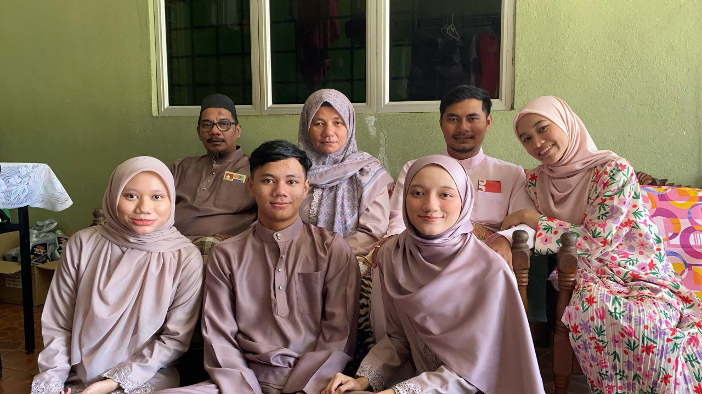

Hello and welcome! I’m Ainnur Amni, a Diploma student in Library Informatics at UiTM Kedah with a curious mind and a big love for all things. While my course dives deep into information management, my real excitement sparks when I do things I like. . I’ve also joined several seminars and boot camps to grow my coding skills and yes, I still find time to hang out with my friends and play with my cat, my favorite companions since I was seven. This website is my little digital corner to share who I am and what I love. Thanks for visiting!
Made with love